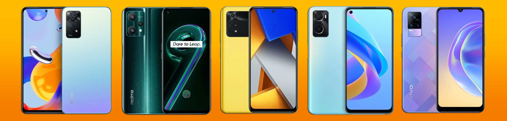

5 Smartphone 3-Jutaan Terbaik, Versi Juni 2022
Pontianak, 30 Juli 2022 - 16.09
oleh Irfanda Anugerah (VANZGADGET.COM)
Berencana untuk ganti HP baru dalam waktu dekat, tapi dana yang tersedia hanya tiga jutaan saja? Tenang, karena saat ini ada banyak smartphone canggih yang harganya berkisar 3 jutaan saja, lho. Dengan segala keunggulannya, HP-HP ini siap menemani aktivitas keseharian Anda dengan baik.
Nah, kali ini VanzGadget akan memberikan rekomendasi smartphone terbaik di kisaran harga tiga jutaan. Semua ponsel yang akan kami rekomendasikan ini merupakan produk dengan kualitas yang tergolong unggulan di segmen harganya. Apa sajakah itu? Yuk, langsung dapatkan informasinya di bawah ini.
1. Poco M4 Pro

| Layar | AMOLED 6.43 inci |
|---|---|
| Chipset | Mediatek Helio G96 |
| RAM | 6 GB, 8 GB |
| Memori Internal | 128 GB, 256 GB |
| Kamera | 64 MP (wide) 8 MP (ultrawide) 2 MP (macro) |
| Baterai | Li-Po 5000 mAh |
| Harga Saat Rilis | Rp 2.999.000 |
POCO M4 Pro adalah ponsel pertama POCO yang dirilis di Indonesia pada 2022. Ponsel ini punya segudang hal keren kendati belum mendukung konektivitas 5G. Hal keren pertama yang dimiliki HP ini adalah kemampuan gaming jempolan.
Kemampuan itu hadir berkat SoC MediaTek Helio G96 yang tangguh, layar AMOLED 90 Hz yang mulus, serta baterai speaker stereo. HP ini juga punya baterai 5000 mAh yang awet dan cepat diisi. Hal keren kedua dari HP ini adalah kameranya.
Tak ada lagi kamera gimmick karena semua lensanya bisa mengambil gambar. Terakhir, POCO M4 Pro punya sertifikasi IP53, konfigurasi memori hingga 8/256 GB. slot microSD khusus, dan jack audio 3,5 mm. Menarik, bukan?
2. Realme 9 Pro 5G

| Layar | IPS LCD 6.6 inci |
|---|---|
| Chipset | Qualcomm Snapdragon 695 |
| RAM | 6 GB, 8 GB |
| Memori Internal | 128 GB |
| Kamera | 64 MP (wide) 8 MP (ultrawide) 2 MP (macro) |
| Baterai | Li-Po 5000 mAh |
| Harga Saat Rilis | Rp 3.799.000 |
Realme 9 Pro 5G tidak sekadar menghadirkan HP Rp3 jutaan dengan dukungan konektivitas 5G. Lebih dari itu, HP ini hadir sebagai salah satu pilihan menarik di kelas harganya. Mulai dari desain, tampilan, kamera, performa, konektivitas, hingga ketahanan baterai, semuanya jempolan.
Mengenai desain, realme membenamkan teknologi Light Shift pada penutup belakang ponsel ini. Teknologi ini membuat Realme 9 Pro bisa berubah warna layaknya bunglon setelah terkena paparan sinar matahari.
Soal ketahanan baterai, HP ini memang memakai layar IPS 120 Hz yang lebih boros konsumsi daya ketimbang OLED. Akan tetapi, nyatanya baterai 5000 yang dikandung mampu membuat realme 9 Pro menyala hingga 27 jam.
3. Redmi Note 11 Pro 6/128

| Layar | AMOLED 6.67 inci |
|---|---|
| Chipset | MediaTek Helio G96 |
| RAM | 6 GB, 8 GB |
| Memori Internal | 128 GB |
| Kamera | 108 MP (wide) 8 MP (ultrawide) 2 MP (macro) 2 MP (depth) |
| Baterai | Li-Po 5000 mAh |
| Harga Saat Rilis | Rp 3.499.000 |
Kedatangan Redmi Note 11 Pro memang tidak seheboh Redmi Note 10 Pro. Meski begitu bukan berarti HP ini tidak bagus. Redmi Note 11 Pro tetap smartphone yang keren di kelas Rp3 jutaan, terutama jika Anda mencari HP yang penampilannya kece.
Benar, penutup belakang dan rangka datar HP Redmi Note 11 Pro memiliki kesan yang elegan. Mampu meningkatkan rasa percaya diri Anda untuk menciptakan personal branding profesional. Lebih dari itu, HP dengan SoC MediaTek Helio G96 ini juga tangguh digunakan dalam berbagai skenario.
Main game, memotret, penggunakan secara outdoor memungkinkan. HP dengan NFC ini makin keren karena mendukung teknologi pengisian cepat 67 W, refresh rate 120 Hz. Oh iya, Redmi Note 11 Pro juga masih punya slot microSD hybrid untuk meningkatkan ruang simpannya.
4. Vivo V21 4G

| Layar | AMOLED 6.64 inci |
|---|---|
| Chipset | Qualcomm Snapdragon 720G |
| RAM | 8 GB |
| Memori Internal | 128 GB, 256 GB |
| Kamera | 64 MP (wide) 8 MP (ultrawide) 2 MP (macro) |
| Baterai | Li-Po 4000 mAh |
| Harga Saat Rilis | Rp 4.399.000 |
Apa sih faktor pembeda utama antara vivo V21 4G dan 5G. Faktor itu adalah desainnya, terutama jika Anda memilih varian warna Diamond Flare yang cantik. Kecantikannya juga didukung ketipisan bentuk dan bobot ringan (171 g0. Cocok buat mejeng bersama teman di kafe sambil minum kopi.
Namun, desain bukanlah satu-satunya hal menarik yang dimiliki vivo V21 4G. HP dengan SoC Snapdragon 720G ini punya kamera yang keren baik kamera belakang maupun depan. Untuk kamera depannya, resolusi yang dipakai adalah 44 MP.
Kamera tersebut dilengkapi sensor eye autofocus dan mendukung perekaman video hingga 4K. Sangat bisa diandalkan jika digunakan untuk membikin vlog. Adapun baterai 4000 mAh HP ini terbilang awet, mampu bertahan hingga satu hari pemakaian.
5. OPPO A76

| Layar | IPS LCD 6.56 inci |
|---|---|
| Chipset | Qualcomm Snapdragon 680 |
| RAM | 6 GB |
| Memori Internal | 128 GB |
| Kamera | 13 MP (wide) 2 MP (macro) |
| Baterai | Li-Po 5000 mAh |
| Harga Saat Rilis | Rp 3.399.000 |
OPPO A76 bisa saja disebut sebagai OPPO Reno7 4G dengan desain yang lebih sederhana dan harga lebih terjangkau. Desain HP ini lebih sederhana karena tidak memakai penutup belakang kulit sintetis, tidak juga memiliki lampu orbit pada lensa kameranya.
Harga HP ini lebih terjangkau karena hanya berkisar Rp3 jutaan. Namun, secara performa, OPPO A76 selevel dengan Reno7 4G. Alasannya karena kedua ponsel memakai SoC Snapdragon 680. Malah dengan layar yang beresolusi HD+ saja, performa gaming OPPO A76 lebih stabil.
Harga HP ini lebih terjangkau karena hanya berkisar Rp3 jutaan. Namun, secara performa, OPPO A76 selevel dengan Reno7 4G. Alasannya karena kedua ponsel memakai SoC Snapdragon 680. Malah dengan layar yang beresolusi HD+ saja, performa gaming OPPO A76 lebih stabil.
Demikianlah pemaparan soal HP 3 jutaan terbaik yang mungkin bisa Anda pertimbangkan untuk dibeli. Di kelas harga ini, ternyata sudah cukup banyak HP yang memiliki spesifikasi terbaik dan mumpuni. Jika Anda memiliki dana kurang dari 3 juta, maka Anda juga bisa melirik salah satu dari 5 HP terbaik dengan harga di bawah 3 jutaan ini.

Tentang Penulis
Irfanda Anugerah adalah seorang Mahasiswa semester 4 di salah satu Politeknik Negeri yang ada di kalimantan. Dia sangat menyukai hal berbau Anime dan juga memiliki Sense Design yang lumayan bagus. Berbekal skill Corel Draw & Photoshop yang sangat membantu dia dalam membuat Web ini.
Share our website

Introduction
Vanz Gadget adalah situs web artikel bertema gadget. Dibuat pada tanggal 30 Mei 2022 oleh Irfanda Anugerah..
Artikel Populer


Artikel Lainnya
5 Smartphone dengan Fast Charging Tercepat Saat Ini